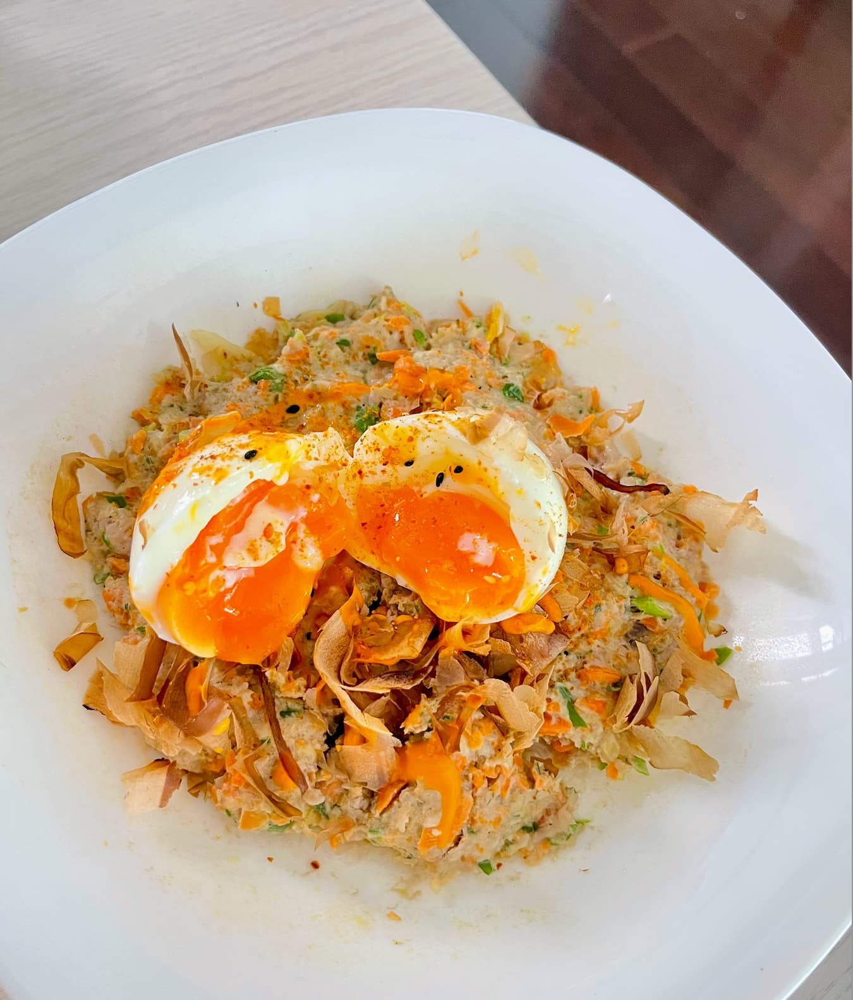

手持調理機開箱，先來試個絞肉料理
前陣子一直在關注手持調理機，看它攪拌食材方便、料理應用多元，還能切片切絲，看得我好動心，覺得有了它一定會更愛下廚！今天總算到貨，第一次開箱就先來做一道絞肉料理試試手感。
（雖然不用調理機其實也做得出來，但有它幫忙切碎、拌勻，做起來更省力、口感也更均勻，心情自然美麗，哈！）
微波大阪燒風肉餅
烹調時間：10 分鐘。只要把所有食材丟進調理機打碎、鋪平微波即可完成，完全不用開火、省得油煙煩。
主要食材
- 豬粗瘦絞肉適量
- 胡蘿蔔適量
- 薑適量
- 青蔥適量
- 金針菇適量
調味料
- 米酒少許
- 鹽少許
- 糖少許
- 香油少許
擺盤配料（選用）
- 柴魚片適量
- 溏心蛋1 顆，剖半
基本上就是冰箱現有的蔬菜都能加，調味也很看當天心情——像今天剛好不想吃醬油味，就換成米酒和鹽做基底。
製作步驟
備料與切碎
將胡蘿蔔、薑、青蔥、金針菇與豬絞肉一起放入調理機的切碎碗中打碎。
調味混合
加入少許米酒、鹽、糖與香油調味，攪拌均勻成肉餡。
微波加熱
將肉餡平鋪在可微波的深盤上，蓋上微波爐專用蓋。
熟化出爐
以中火加熱約6 分鐘，至肉餅完全熟透（熟成時間會因肉量、厚度、微波爐功率而異，要依實際狀況斟酌調整）。
擺盤上桌
出爐後撒上柴魚片（柴魚片還會在熱氣中跳舞！），擠上冰箱現成的是拉差美乃滋辣椒醬，最後放上一顆剖半的溏心蛋，完成！
營養分析（單人份估算）
以這次的比例來估算：豬粗瘦絞肉 120 克、蔬菜約 50 克（胡蘿蔔、薑、青蔥、金針菇）、香油僅幾滴、溏心蛋一整顆，全份大約落在以下數值：
營養成分（全份，約 1 人份）
- 熱量約 290 kcal
- 蛋白質約 31 g
- 脂肪約 16 g
- 碳水化合物約 4 g
換算下來，這份肉餅碳水量非常低、蛋白質占比高，算是名副其實的低碳高蛋白料理。蔬菜量少、幾乎沒有額外澱粉來源，因此整體碳水偏低。※數值依食材種類的一般營養資料估算，實際會依絞肉肥瘦比例、蔬菜含水量略有差異，僅供參考。
做菜心得與檢討筆記
試吃結果
老實說，雖然賣相有九成像居酒屋的大阪燒，但肉團本身的味道層次還是偏向清淡（風味較清爽、口感則略乾），比較像是一道「健康版」的大阪燒。
問題檢討
蔬菜出水，稀釋了調味：金針菇和胡蘿蔔在微波加熱過程中會釋放大量水分。如果肉底沒有先醃透入味，這些菜水釋出後就會把原本的調味稀釋掉，讓整體風味偏向清蒸健康餐，少了那股濃郁感。
純瘦肉缺乏保水力，容易顯得乾柴：純瘦絞肉在微波加熱時，肌肉蛋白質會快速緊縮脫水。如果沒有事先做「打水」處理，或補足油脂做保護，肉餡就容易吃起來乾乾柴柴。
下次調整版：先醃肉、後放菜
醃肉打水
絞肉先加鹽、醬油、少許糖，順著同一個方向攪拌到出現黏性；接著分次加入1～2 大匙水，邊加邊攪，讓肉充分吸收水分，這個步驟就是俗稱的「打水」。打水的原理是讓鹽溶出肉裡的鹽溶性蛋白（肌動蛋白、肌凝蛋白），這些蛋白質會形成一層網狀結構，把水分鎖在肉餡裡，加熱時才不容易流失。
鎖水
加入一小匙太白粉，或少量蛋白拌勻，幫助鎖水定型；最後再加香油拌勻提香。
蔬菜先擠乾水分，再拌入肉餡
蔬菜切碎後先擠乾多餘水分，再與已經打水醃好的肉餡拌勻（絞肉本身不需要過度攪打，以免出筋影響口感）。之後鋪平肉餅，厚度盡量控制在2 公分以內，讓微波受熱更均勻，再進微波爐加熱。
希望下次調整後，能做出更多汁入味的版本～
